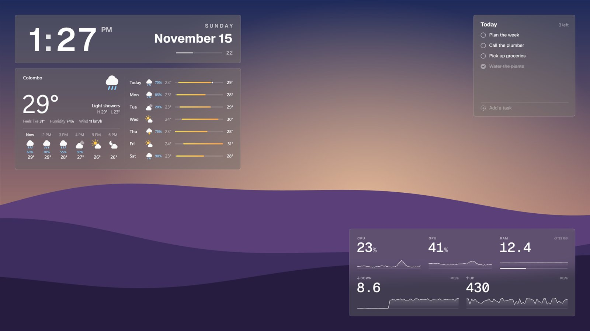

Glass widgets for your Windows desktop
Clocks, weather, prayer times, to-do lists, notes and a PC monitor, sitting on your wallpaper behind your apps. 39 widgets are free.

Light on your PC
One small process runs every widget. In our tests on one PC, five widgets used about 0.1% of the processor, and widgets rest while a window covers them.
No account, no ads
No sign-in, no ads, no analytics. Your notes, lists and settings stay on your PC.
Yours to arrange
Drag widgets anywhere, resize from any edge, and pick a font, an ink colour and a glass style for each one.
Pro, later
Some widgets are marked Pro. You can try each one on your desktop for 10 minutes. Buying Pro isn't available yet.
Weather is based on data from MET Norway. Place names come from GeoNames.org (CC BY 4.0).